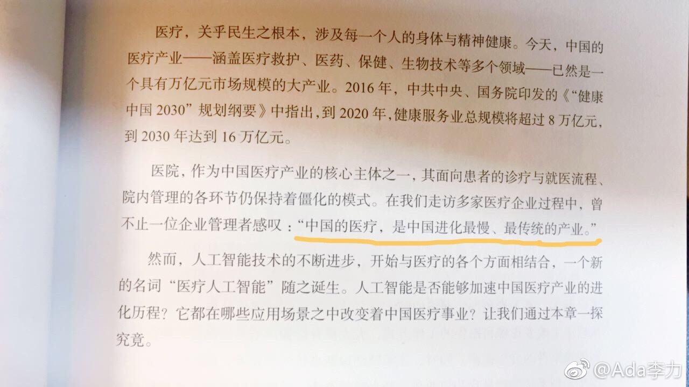
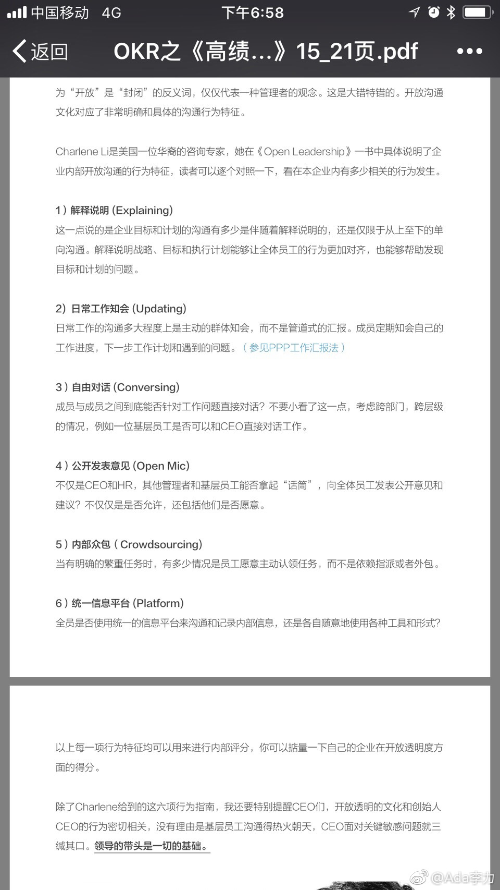

#创业#亿欧的这本人工智能书里提到：中国的医疗，是中国进化最慢，最传统的产业。之前四年的医美创业经历，还是很认可这个结论的。一方面，因为很传统，跨行从IT和互联网来这个行业创业的人，经常会碰得鼻青脸肿。思维方式及做事方法，差异太大了。另一方面，这也意味着巨大的机会。 
在上一个#创业#项目中，我尝试打造出自己喜欢并认可的公司文化，比如开放透明，很可惜没成功。逐一看了下对开放透明的六个指标：1.解释说明2.日常工作知会3.自由对话4.公开发表意见5.内部众包6.统一信息平台之前都尝试过，但都没做到位。下一个项目，一定要贯彻和坚定这些想法和做法。 
最近在筹备自己#创业#项目的同时，也在做金融AI的文因互联帮些忙。最主要的原因，一是信任创始人@西瓜大丸子汤 另一个就是那里氛围很好，每次去都很开心，喜欢那个公司里的每一个人。文因互联跟其它公司很不一样的几个地方：1，学习型公司，同事要分享下自己推荐的十本书。公司没有的，要购买回来。几面墙都是书架，书的种类保罗万象，比如如何与猫沟通。2，知识沉淀做得好，几乎所有的活动都有追踪和记录。每周有内部分享会。3，有很多让同事愉悦的措施，请阿姨做午餐，晚餐，有内部食堂；组建运动俱乐部；以及公司里养了一只猫，叫阿丑。阿丑有公认的爸爸，很护崽，今天很不满意地问大家是不是上周大家没有撸猫，感觉阿丑很缺爱，一关门就叫唤。于是大家向猫爸告状阿丑现在不乖，开始咬人了。其实创业公司氛围和文化是创始人打造的，鲍捷是很有意思的人，也很奇葩。有机会以后再说吧。
最近我对姣姣爸爸态度好很多，转变的原因是，某天突然设想如果姣姣爸爸是我公司的员工的话，是很不错的人，有能力，工作态度也不错，做事认真，也不惹是生非。这样的员工，我得好生供着，怕他走。但角色是自己老公时，我为什么就这么挑剔呢？创业有搭档，生活也有搭档，对搭档的态度应该是一致的。